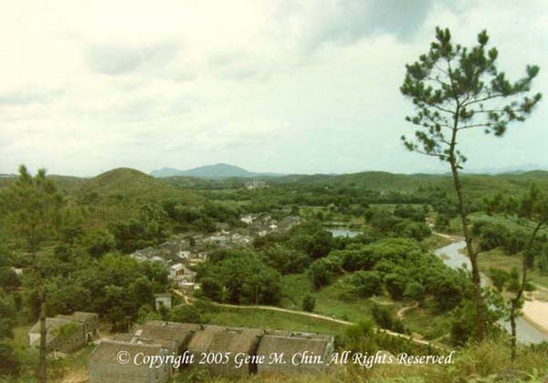

|  |
|
This is a photograph taken by Gene in 1985. It shows two of the hamlets of 潢村 Vōng Tûn (Huángcūn) — 白雞 Bàk Gäi/ (Báijī) White Chicken in the bottom half of the picture with a few houses and 河清里 Hõ Tëin Lî/ (Héqīnglǐ) (a.k.a. 海邊 Hōi Bêin/ (Hǎibiān) Riverside) with about 25 houses just above and to the left of 白雞 Bàk Gäi/ (Báijī) White Chicken. Notice that the bend in The River no longer exists. |